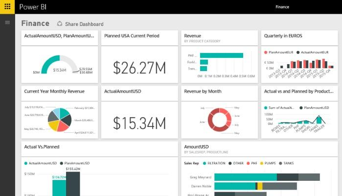
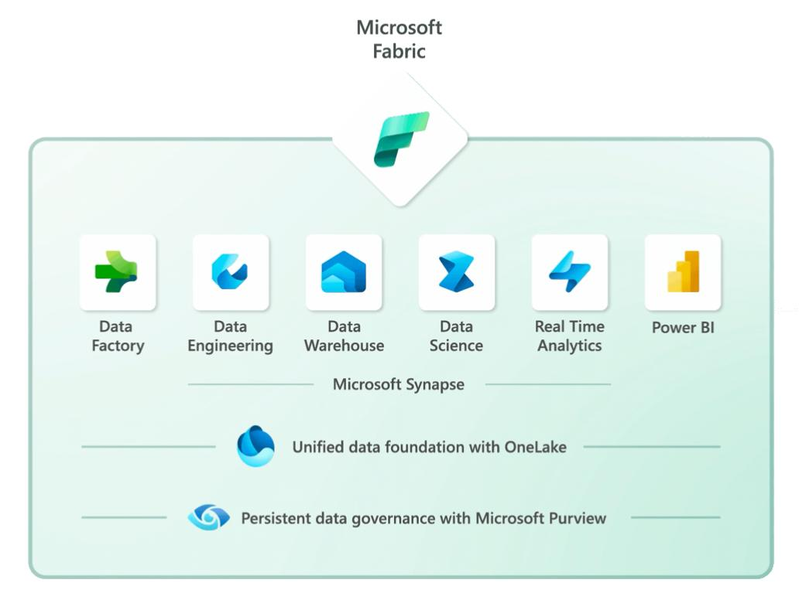
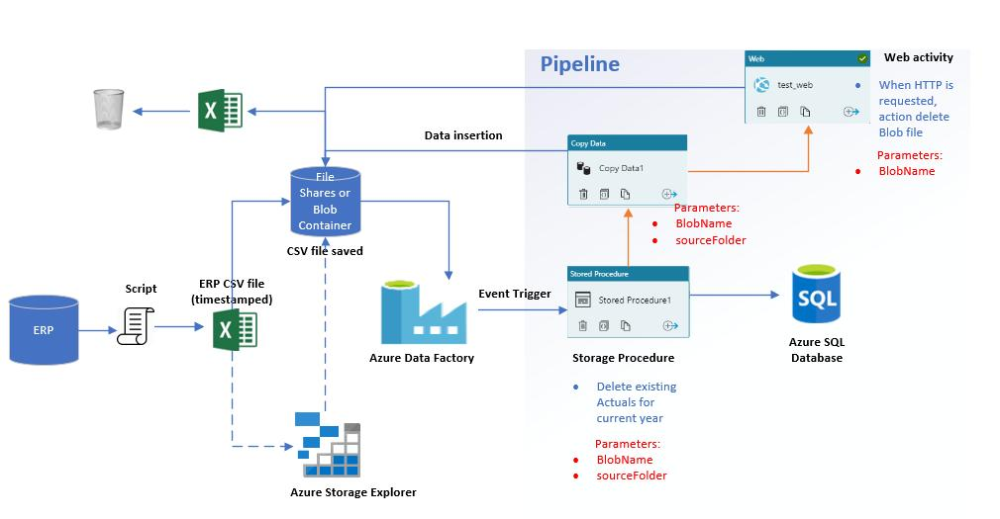

Data Analytics Professional with 5.5+ years of experience in Power BI, Microsoft Fabric, Azure Data Factory, SQL, Python and Alteryx, helping organizations transform raw data into actionable insights.
I am a passionate Data Analytics Professional with 5.5+ years of experience in designing enterprise dashboards, developing ETL pipelines and delivering analytics solutions using Power BI, Microsoft Fabric, Azure Data Factory, SQL, Python and Alteryx.
I specialize in transforming complex business data into interactive dashboards and meaningful business insights.
Years Experience
Dashboards
ETL Pipelines
Reports
Power BI
SQL
Microsoft Fabric
Azure Data Factory
Python
Alteryx
Developed enterprise Power BI dashboards, automated ETL workflows using Azure Data Factory and Alteryx, and implemented Microsoft Fabric analytics solutions for banking clients.

Designed an executive Power BI dashboard to monitor KPIs, customer insights, loan performance and financial trends.

Built an end-to-end analytics solution using OneLake, Lakehouse, Semantic Models and Power BI.

Automated ETL pipelines using Azure Data Factory, Incremental Loads and Data Flows.
Interactive dashboards and business reports.
Azure Data Factory & Alteryx automation.
Lakehouse and enterprise analytics solutions.
Data cleaning and reporting automation.
Analytics Engineer
Business Intelligence
ETL Development
Database Programming